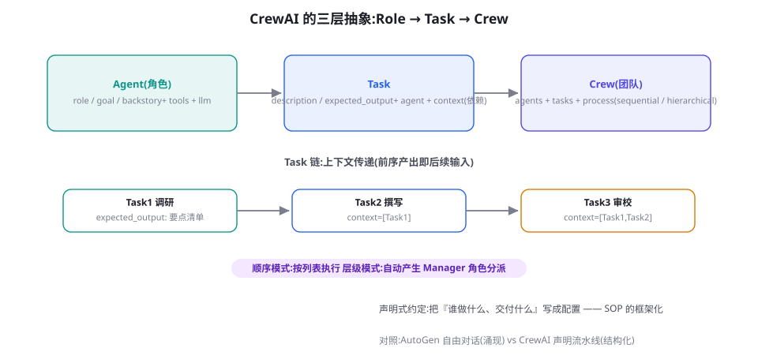

CrewAI：角色驱动的多 Agent 团队
CrewAI 把多 Agent 协作压缩成三个名词：Role（角色）、Task（任务）、Crew（团队）。本章讲清这套声明式抽象的表达力边界、顺序与层级两种执行模式的差异、以及「什么时候三个名词就够、什么时候你必须离开」。
三个名词：声明式的团队建模
CrewAI（2023 年末出现，因简洁而迅速流行）的设计野心是让不会写编排代码的人也能组「Agent 团队」。它把第 24 章讲过的 Orchestrator-Workers 模式，压缩成了三个平实的声明：
- Agent（角色）：role（职位名）、goal（职责目标）、backstory（背景故事）三件套 + 工具与模型配置。backstory 看似戏剧化，实则是提示工程的角色锚定——「你是拥有十年经验的资深行业分析师」这类设定对输出风格的塑形作用是实证存在的。
- Task（任务）：description（做什么）、expected_output（交付什么——这是 CrewAI 最有价值的字段，稍后详述）、agent（指派给谁）、context（依赖哪些前序任务的产出）。
- Crew（团队）：把 Agent 与 Task 装配起来，指定执行模式（sequential 顺序 / hierarchical 层级）与全局配置。

from crewai import Agent, Task, Crew, Process
researcher = Agent(
role="行业分析师",
goal="为指定主题收集准确、时效性强的事实要点",
backstory="十年科技行业研究经验,擅长从公开资料中"
"提取可验证的关键事实,从不编造数据。",
tools=[search_tool],
llm="gpt-4o-mini")
writer = Agent(
role="技术作者",
goal="把研究要点改写成准确流畅的中文科普文章",
backstory="资深技术编辑,文风简洁克制,痛恨夸大其词。",
llm="gpt-4o-mini")
reviewer = Agent(
role="事实核查员",
goal="核对文章的每个事实性论断并指出依据不足之处",
backstory="前调查记者,以挑剔著称,只信来源不信感觉。",
tools=[search_tool],
llm="gpt-4o-mini")
t1 = Task(description="调研: {topic} 的 2026 年三个关键进展",
expected_output="5~7 条要点列表,每条附来源链接",
agent=researcher)
t2 = Task(description="基于要点清单撰写 500 字科普短文",
expected_output="一篇 500 字左右的 Markdown 文章,风格克制",
context=[t1], agent=writer)
t3 = Task(description="核查文中每个事实论断",
expected_output="核查报告: 通过项列表 + 有问题项及原因",
context=[t1, t2], agent=reviewer)
crew = Crew(agents=[researcher, writer, reviewer],
tasks=[t1, t2, t3],
process=Process.sequential)
print(crew.kickoff(inputs={"topic": "AI Agent"}))行为解剖：一次 kickoff 内部发生了什么
把上面示例跑起来时，框架内部做的事值得逐层理解——理解了它，你就知道「声明」最终落在什么运行时上。第一层：任务实例化——模板变量（{topic}）注入，context 链解析为依赖图。第二层：逐任务执行循环——按顺序取 Task，构造该次执行的提示词：Agent 的 role/goal/backstory 拼成角色段，Task 的 description 加 expected_output 拼成任务段，context 中前序任务的产出拼成资料段。第三层：工具循环——执行 Agent 需要时调用其工具（与第 17 章的工具循环同构），直到产出候选答案。第四层：产出回流——Task 产出存入结果表，供 context 引用；全部任务完成后 Crew 汇总最终产出。理解这个四层结构有两个用途：调试时按层定位（产出格式错 → 检查第二层的提示词拼装；工具没被用 → 检查第三层的工具挂载）；迁移时按层替换（每层都有明确的等价物——第 27 章手写循环可替三四层，LangGraph 图可替一二层）。框架没有魔法，它只是把你手写过的东西配置化了——这句话适用于本章，也适用于整个框架篇。
出现以下任一情况，CrewAI 的三名词抽象已经不够用：① 需要条件分支——「如果调研结果不足就换关键词重查」这类逻辑在纯 Task 链里表达不了（硬着头皮的做法是加一个「判断 Task」，产出文本让后续任务「看着办」——控制流退化为祈祷）。② 需要人工介入点——审批、确认在 Crew 内没有一等公民的原语。③ 需要失败重试与断点恢复——某个 Task 失败后从中间续跑，框架支持有限。三者共同的出口：Flows 层（把 Crew 当作流里的一个步骤）或迁移 LangGraph。判断时机：当你的 Crew 定义文档开始出现「然后视情况……」的描述时，就是该写代码的时机。
expected_output：被低估的点睛设计
为什么说 expected_output 是 CrewAI 最有价值的字段？因为它把验收标准前置到任务定义时刻——这恰好是第 18 章「结构化计划 = 动作 + 依赖 + 验收」三要素里最难落地的一项。它的三重作用：给执行 Agent——「交付什么」比「做什么」更能约束生成（「5~7 条要点列表，每条附来源链接」直接规定了格式与数量）；给流程——框架把 expected_output 注入执行提示，作为隐式验收锚点；给团队协作——声明 CrewAI 的 Task 时，讨论「交付物长什么样」比讨论「让它干什么」更容易暴露需求分歧。把它用足的经验：写 expected_output 时像写验收测试一样具体（格式、数量、必须包含的元素、禁止出现的东西），泛泛的「一份高质量报告」等于没有写。
两种执行模式：顺序与层级
顺序模式（sequential）：任务按列表顺序执行，context 指定的前序产出注入后续任务。它就是 SOP 流水线（第 24 章拓扑二），行为完全可预测——生产环境毫无悬念的首选。层级模式（hierarchical）：框架自动生成一个 Manager 角色，由它动态决定「下一个执行哪个任务、指派给谁」，并可在任务间重分配。它相当于内置了一个微型 Orchestrator——灵活性高，代价是行为不可预测、多一层 Manager 调用成本，以及一个微妙的问题：Manager 是框架提示词定义的，你对它的调优手段有限。选择建议与第 24 章完全一致：默认顺序，层级模式用于「任务集在运行前无法完全确定」的场景，且要配 max_rpm 与步骤日志。若你发现自己在层级模式里苦苦调优 Manager 行为，那是迁移到 LangGraph（自己写路由）或自研（第 27 章）的信号——CrewAI 的舒适区是「流程其实已知」的声明式场景。
工具、Flows 与「 CrewAI 2.0」的扩展
CrewAI 早期的「角色声明」抽象在复杂逻辑面前会遇到表达墙（条件分支、循环、人工介入都塞不进三个名词），后来的版本补了两块拼图。自定义工具：继承 BaseTool 声明工具（Pydantic Schema），与第 17 章的规范完全对应——工具质量依然是这类框架效果的决定因素。Flows（工作流）：2024 年末引入的代码级编排层——用 Python 类定义 @start / @listen / @router 的事件流，在流里可以调用 Crew 完成单个步骤。Flows 的出现承认了一个事实：声明式的 Crew 擅长「一步内」的团队协作，而步骤间的控制流需要回到代码。这个「Crew 做任务内、Flow 做任务间」的分层，恰好与第 24 章「Orchestrator 分派、Worker 干活」的结构同构——框架自身也在沿着「涌现 → 结构化」的方向稳步进化。
有效的 backstory 三段式：专业身份（「十年经验的分析师」）+ 工作方法（「只信来源不信感觉」）+ 性格约束（「痛恨夸大其词」）。避免两种写法：空洞的头衔堆砌（「资深专家、行业领袖」——无信息量）与任务描述的重复（goal 已说了要做什么，backstory 该给「怎么做人的信息」）。检验标准：把 backstory 单独拿给一个真人看，他能想象出这个人的工作状态，就算合格。
生产实践清单：CrewAI 项目的八条军规
- ① expected_output 当验收测试写（格式/数量/禁项俱全，本章已述）。
- ② 每个角色配最小工具集——reviewer 不给写入工具（第 31 章的视角分离原理）。
- ③ context 链保持单向无环——循环依赖是声明式系统的头号配置错误。
- ④ 全局 max_rpm 与每 Agent 步数上限——声明式不等于可以没有刹车。
- ⑤ 产出结构化——需要下游程序处理的 Task，expected_output 指定 JSON Schema 并配 output_parser。
- ⑥ 独立记录每次 Task 的输入输出——框架自带 callback，接你的日志系统（第 79 章）。
- ⑦ 用同一个评测集驱动迭代——改 backstory 与 expected_output 前后跑分（第 13 章），别靠感觉。
- ⑧ 敏感操作走 Flows + 人审——Crew 内部不放高危动作（第 25 章）。
两个典型的「甜点区」场景
给两个被大量验证过的场景，帮助校准直觉。场景一：内容生产流水线——调研→写作→审校→SEO 优化，四角色三到四任务，顺序模式。这是 CrewAI 的「教科书场景」（官方演示即此），它的适配点：每步职责清晰、交付物文本化、验收标准可声明、无需人工实时介入。变体极多：市场文案、周报生成、产品描述批量生产、多语言本地化。场景二：结构化研究简报——「子主题拆分 → 并行调研（多个研究员各领一个子题）→ 汇总撰写 → 核查」。这个场景展示 CrewAI 的高级用法：任务列表可以在 Flows 里动态生成（先跑一个「拆分 Crew」，其产出生成主 Crew 的 Task 列表），形成「流水线的流水线」。两个场景共同的适配前提值得复述：流程已知、交付物可声明、单次运行可接受成本。离开这三个前提（需要动态探索、交付物不可预定义、高频调用），就是第 28/29 章的地盘。
from crewai.flow.flow import Flow, start, listen, router
from pydantic import BaseModel
class ReportState(BaseModel):
topic: str = ""
outline: list[str] = []
report: str = ""
approved: bool = False
class ReportFlow(Flow[ReportState]):
@start()
def take_topic(self):
self.state.topic = self.state.topic or "AI Agent 安全"
@listen(take_topic)
def draft_outline(self):
crew = build_outline_crew() # 一个小 Crew:拆提纲
self.state.outline = crew.kickoff(
inputs={"topic": self.state.topic}).pydantic.subtopics
@router(draft_outline)
def check_outline(self):
# 声明式 Crew 干不了的判断逻辑,在这里用代码写
if len(self.state.outline) < 3:
return "regenerate" # 回到生成
return "write"
@listen("write")
def write_report(self):
self.state.report = build_writing_crew(
self.state.outline).kickoff().raw
flow = ReportFlow()
flow.kickoff(inputs={"topic": "AI Agent 安全"})Flows 的价值在这段代码里一目了然：结构化控制流（路由、重生成）用真代码，领域工作（拆提纲、写报告）用声明式 Crew。这个「代码管流程、声明管执行」的分工与本书一贯的架构观完全一致——也解释了为什么 CrewAI 生态的成熟项目几乎都是「Flow 为主、Crew 为点缀」的形态。
成本与调试视角
成本结构上，CrewAI 的特点是「可预算性强」：顺序模式的调用次数 ≈ 任务数 × (1 + 工具轮次)，在 kickoff 前就能估算——这比群聊模式的「轮次涌现」友好得多，也是声明式框架的隐性福利。降本三杠杆：非关键角色用小模型（角色级 llm 配置）、检索类任务共享缓存（相同子题的研究复用）、砍掉「锦上添花」的最后一个审校 Task（用规则检查器替代——第 22 章的「先校验后反思」）。调试视角上，CrewAI 最大的痛点是中间产出的可见性：默认只给最终结果，排查「文章为什么跑题」需要逐 Task 的输入输出——生产配置务必挂 task callback 落盘每步细节，或直接接 Langfuse/LangSmith（第 79 章）。拿到逐步记录后，调试方法论与第 24 章的交接审计一致：从失败的 Task 回溯其 context 注入的前序产出，八成问题出在「前序交付物不符合预期格式」——而那又回到 expected_output 没写好。整条调试链的起点，常常是你自己当初少写的那半行验收标准。
把 CrewAI 放回组织隐喻里做最后一次审视，会有一个有趣的观察：它的三个名词其实是「岗位说明书 + 工作任务单 + 项目组」的软件化——Role 是岗位说明书（谁、目标、背景），Task 是任务单（做什么、交付什么、依据什么材料），Crew 是项目组（把人与单子配对）。这个隐喻解释了它的流行：企业管理者不需要理解「循环」「状态」「图」，就能用自己熟悉的概念组装 Agent 团队——CrewAI 的真正创新不是技术而是「翻译」：把 Agent 编排翻译成了管理学的母语。这个视角也预示了它的天花板：管理学概念覆盖不了并发、断点、回滚这类纯工程需求——所以 Flows 必然出现，所以复杂场景必然流向图框架。一个框架的抽象用哪门语言书写，几乎决定了它的用户群与终局——这个观察，留给正在设计自己工具链的你细细品味。
层级模式的 Manager 不是一个「聪明的主管」，而是一个由框架提示词定义的「任务路由器」：它读到任务列表与各 Agent 的描述，每轮决定「派哪个 Task 给哪个 Agent」。理解这一定位后的三个推论：其一，Manager 的决策质量受限于你给每个 Agent 写的 goal/description——描述含混，分派就乱（又一次：工具/角色的描述是给模型的文档）；其二，Manager 每轮一次调用，层级模式的成本比顺序模式多出这部分「管理费」——任务少而固定时纯属浪费；其三，Manager 无法超越框架提示词给它的能力边界（比如它做不了「预算管控」这类框架没教的判断）——需要更聪明的调度，就该自己写 Orchestrator（LangGraph 路由或自研），而不是调 Manager 的提示词。一句话：层级模式是「免费赠送的小型调度器」，适合演示与轻场景；把调度当核心竞争力的话，请自建。
迭代工作流：CrewAI 项目的两周节奏
给一个从零到生产的两周节奏参考，配套本章各节使用。第 1~2 天：写任务定义与 expected_output（产品与工程师一起——这是全程最重要的两天）；第 3~4 天：单 Agent 版跑通每个 Task（不组 Crew，逐个验证角色与工具）——很多团队跳过这步直接组队，结果问题互相纠缠无法定位；第 5~7 天：组装 Crew，用 10 条评测任务跑基线；第 8~10 天：按失败类别迭代（改 expected_output / backstory / 工具描述——按第 17 章七原则）；第 11~12 天：接 callback 落盘 + 观测平台 + 成本看板；第 13~14 天：压力测试（异常输入、长文本、限流）与灰度发布准备。两周结束的验收标准：评测集成功率达标、每 Task 有独立记录、单次运行成本可预算。这个节奏里最值得强调的是「先单后组」——第 27 章的手写功夫在这里第二次变现：单 Agent 调优能力直接决定组队后的下限。
人工介入的落地：CrewAI 里的三种审批姿势
承接上一节的安全话题，把人审的三种实现姿势排个序。姿势一：human_input 标志——CrewAI 内置的 Task 级开关（human_input=True），Task 产出后暂停、把结果打印给用户、等待用户反馈后继续。它适合命令行原型，交互形态原始（纯文本问答），且「暂停」是进程内的——人离开则任务挂着。姿势二：工具层审批——在危险工具的函数体第一行调用你的审批服务（同步等待批准或超时拒绝），批准才继续执行。它把闸门下沉到工具（第 25 章的实现地图），对框架透明，适用于任何框架——本书推荐的通用做法。姿势三：Flows 拆段——把 Crew 的执行切成两段（草稿段/发布段），段间用 Flow 的状态持久化与外部审批队列衔接（第 25 章的工作队列）。它最重但最正规：审批可以由另一个人在另一个系统里完成，Agent 的运行与人完全解耦。三种姿势按「介入深度」递增，选择依据是你的审批延迟容忍——分钟内批完用姿势一/二，可能跨天用姿势三。
与 AutoGen / LangGraph 的三角关系
| 维度 | AutoGen（第 31 章） | CrewAI（本章） | LangGraph（第 28 章） |
|---|---|---|---|
| 协作范式 | 自由对话（涌现） | 声明式流水线（结构） | 显式状态图（结构+） |
| 入门成本 | 低（会发消息就行） | 最低（三个名词） | 中（要懂图概念） |
| 控制流表达 | 弱（靠选人策略） | 中（Flows 补齐） | 强（原生） |
| 持久化/人审 | 弱 | 基础 | 强（checkpointer/interrupt） |
| 最适合 | 探索、试错反馈型 | 清晰的 SOP 团队任务 | 复杂生产流程 |
三个高频疑问
Q：CrewAI 的角色数量有没有经验上限？实践甜蜜区 3~6 个 Agent。超过后两个问题浮现：上下文链的管理复杂度超线性增长（每个新 Task 的 context 依赖需要人工推理）；「角色同质化」风险（第 24 章）——多出来的角色常常只是原有角色的别名。任务真的需要更多角色时，先问「能不能合并」，再考虑「拆成多个 Crew 分层跑」。
Q：Crew 的整体产出怎么拿到结构化结果？三条路：最后一个 Task 的 expected_output 指定 JSON 格式（最简单）；Crew 的 output_json / output_pydantic 参数强制全程结构化（适合整条流水线都为程序服务的场景）；Flows 层在 Crew 之后自己做解析校验（控制力最强）。生产系统推荐第三条——解析与校验的失败处理要自己做，别托付给框架的隐式行为。
Q：backstory 写「你被困在 2050 年的 AI 觉醒时代」这类戏剧设定有用吗？偶尔有娱乐性，工程上无用甚至有害——角色设定的本质是给模型一个「行为先验」（第 6 章），有效成分是「专业身份 + 方法论 + 约束」，戏剧背景若不含这些成分就是纯噪音，还占提示词预算。判断标准回到那条老规则：这句话会改变模型的一个具体行为吗？不会，就删。
本章收尾的小练习：把你第 24 章自测题里建模过的「文档合规审查」用 CrewAI 真正写出来（三个角色、三条任务、一条 context 链，约 60 行），然后刻意做一个「错误实验」——把 reviewer 的 backstory 删掉只留 role，对比核查质量的差异。你会亲眼看到「背景故事」不是玄学装饰而是行为先验——这份亲手验证的记忆，比本书说十遍都管用。做完实验，下一章我们去看看把「软件公司」整个搬进多 Agent 世界的大胆尝试：MetaGPT。
关于 memory 参数的补充说明：CrewAI 提供 Crew 级的 memory 开关（会话记忆、实体记忆、历史记忆），底层接的是向量存储。工程建议是初期关闭——先把任务链跑顺（记忆引入的变量会干扰你判断「哪个 Task 的问题」），稳定后再按第 19 章的判据决定是否引入长期记忆。框架的便利开关与系统的可控性之间，永远优先可控性——你随时可以打开一个开关，但很难从一个被开关搞乱的系统里干净地退出来。
带着映射表读回第 24 章，你会发现一一对应：Role ≈ Worker 的角色定义；Task ≈ 任务书（目标/交付/依赖三要素齐了两个，预算要素框架级提供）；顺序 Process ≈ 流水线拓扑；层级 Process ≈ Orchestrator-Workers（Manager 即 Orchestrator）；Flows ≈ 外置 Orchestrator 的自研路线。一张映射表在手，两个框架的文档读起来都是旧地重游——这也再次验证了第 24 章结尾那句话：先懂机制，框架只是语法。
最后是一句关于框架学习密度的建议：CrewAI 是全书框架篇里「最薄」的一章——不是它不重要，而是它的概念面就是三个名词加一个 Flow。如果你读到这里觉得「这就完了？」，那是正确的感觉：这正是声明式抽象的胜利，也是它的全部。恭喜你——框架篇最难的两章（28 与 30）你已经走过，剩下的都是风景。
另一个常被问到的实操问题：CrewAI 的异步执行。顺序模式默认同步跑任务，但相互独立的 Task（context 无依赖）完全可以并行——CrewAI 支持 async_execution=True 的任务标记，框架自动并发。这是顺序模式的「隐藏并行」：只要你的 context 链画得好（依赖声明准确），性能就免费获得——又一次证明「依赖图是编排的核心资产」。注意异步任务的产出在后续 Task 的 context 引用时会被自动等待，无需手写同步逻辑。
安全方面的一句提醒收尾：CrewAI 的工具权限是「Agent 级全有或全无」——挂载即授权，没有单次审批概念。高危工具（发送、支付、删除）要么不挂、要么在工具函数内部实现审批（第 25 章的闸门下沉到工具层），要么整体走 Flows + 人审。声明式框架的权限粒度，是你为「三个名词的简洁」支付的价格之一——清楚这一点，就能在设计与实现之间做出自觉的选择。
收工前的最后检查：本章的示例代码、八条军规、两周节奏与三个场景，合起来是一份可以直接执行的「CrewAI 项目启动包」。若你的下一个任务恰好落在甜点区（流程已知、角色分明、交付可声明），现在就可以开工——一小时搭骨架，一天见雏形。若不在，也没有损失：本章反复指向的机制坐标（第 24 章的拓扑、第 18 章的验收、第 17 章的工具）在任何框架里都成立。框架篇继续，下一章 MetaGPT。
读到这里，你可以做一次「框架品味」的小测验：如果让你向一位完全没接触过 Agent 的产品经理解释 CrewAI 是什么，你会怎么开头？本书给出的参考答案是：「它是一个让你用『岗位、任务、项目组』三个词组装 AI 团队的工具——你会写岗位说明书，就会用它。」能说出这样一句话，说明你不仅学会了框架，还掌握了向不同听众「翻译」技术的能力——而这恰恰是本章观察组织隐喻时想交给你的第二层技能。技术人的天花板，常常不在技术里。
补充一条与第 19 章记忆开关相关的进阶用法：CrewAI 的「实体记忆」(short-term/entity memory) 会自动从任务交互中抽取实体并跨任务复用——在长流水线里（比如多章节报告），它能减少「前后口径不一」的问题。但它的抽取质量依赖任务产出的结构化程度——又一个「结构化产出是协作货币」的例证。使用它之前，先确认你的 expected_output 已经把关键实体（名称、数字、结论）固定成型，否则记忆抽取到的只有噪音。
至此，多 Agent 框架三重奏（自由对话的 AutoGen、声明团队的 CrewAI、公司隐喻的 MetaGPT）已经完成两章。下一章的 MetaGPT 会把「结构化」推到极致——当每个角色都有严格的输入输出协议时，多 Agent 系统的可预测性可以达到什么程度？这是框架篇里最「工程学」的一章。
本章小结
- 三名词抽象（Role/Task/Crew）把 Orchestrator-Workers 做成声明式配置，入门成本在所有框架中最低。
- expected_output 把验收前置到任务定义——最值得用足的字段，写法如验收测试。
- 顺序模式是生产默认；层级模式的 Manager 调优困难是离开的信号。
- Flows 层承认了「步骤间控制流需要代码」——Crew 管任务内、Flow 管任务间。
- 生态位：流程已知的 SOP 团队任务；复杂控制流去 LangGraph，自由探索去 AutoGen。
自测题
- 把第 24 章的「文档合规审查」案例用 CrewAI 建模：几个 Agent、几个 Task、context 链怎么画？
- expected_output 与第 18 章「验收标准」的对应关系是什么？写三个高质量与三个低质量的 expected_output 对比例子。
- 什么信号说明你的 CrewAI 项目该迁往 LangGraph？（提示：Flows 里出现了什么？）
- backstory 的三段式配方为什么有效？用第 6 章的角色设定原理回答。
参考文献与延伸阅读
- CrewAI (2024). CrewAI 官方文档. docs.crewai.com; github.com/crewAIInc/crewAI
- CrewAI (2024). Flows：代码级工作流文档. docs.crewai.com/concepts/flows
- Moura, J. (2024). CrewAI 的设计理念演讲与博客.（创始人对角色抽象的解释）
- Polygon / DeepLearning.AI (2024). Multi AI Agent Systems with crewAI 课程. deeplearning.ai